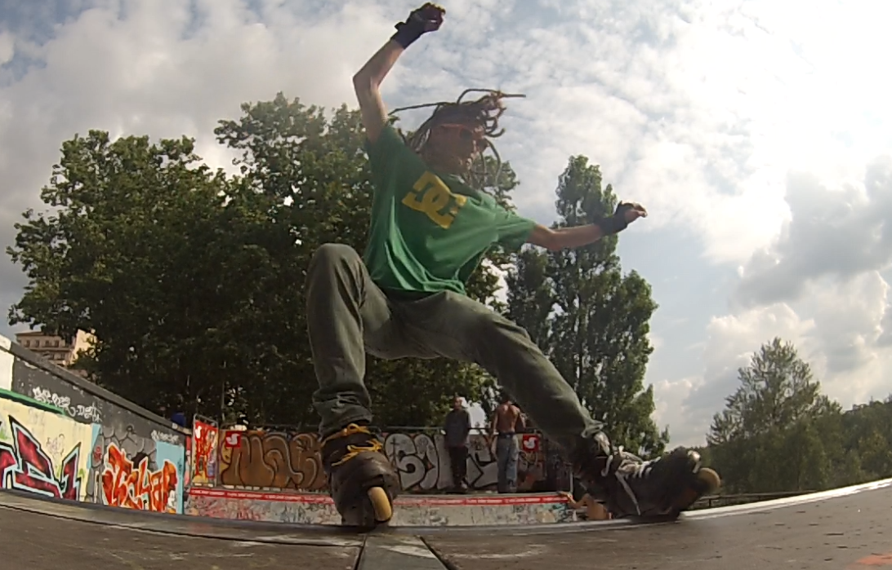
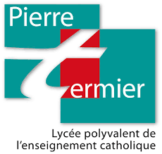

Bastien Thouverez
Computer science teacher
Lyon, France
bastien.thouverez@gmail.com
0033764077991
Computer science skills
Web development (HTML/CSS, PHP/MySQL, Javascript)
Software programming (C/C++, Java, Python)
Project analysis (UML, agile software development)
Languages
French
English
Spanish
Work Experience
Computer science teacher
| . |
 |
Sep 2017 - Current
I am currently teaching computer science in several places:
Notre-Dame School Center (CSND), Villefranche-sur-Saône, France
→ [BTS] Teaching project analysis, basic programming, Oriented Object Programming, web development (PHP, C#, Java, UML)Notre-Dame School Center (CSND), Saint-Jean d'Ardières, France
→ [Mid-School] Teaching an initiation to programming (HTML/CSS, Scratch, Python)University Claude Bernard Lyon1 (UCBL), Villeurbanne, France
→ [DUT] Teaching a web development module (PHP)Trainee at LIRIS, Lyon, France

2013 - 2017
I have been three times trainee at LIRIS computer science laboratory specialised in image field:
- Mar-Jul 2017, GeoMod team : Master degree intership, e-ROMA research project, modeling, animation
- Jun-Jul 2016, M2Disco team : Voluntary internship, topological and combinatory modeling, surface thickening
- Jun-Jul 2013, SAARA team : Voluntary internship, TOPOSIM software, website development
Trainee at TMM Group, Valence, France
Nov 2011 - Jan 2012
DUT degree internship: project analysis, web development
Education
University Claude Bernard, Lyon, France

2009 - 2017
I studied computer science at University Claude Bernard where I had following diplomas:
- 2017 : Master degree, computer science specialisation image, development and 3D technologies
- 2014 : Licence degree, computer science
- 2012 : DUT degree, computer science
Pierre Termier School, Lyon, France
1994 - 2009
I had all my school education at Pierre Termier school where I obtained my baccalaureat in 2009 with maths option
Detailed teaching
2018 - 2019
[BTS] Notre-Dame School Center, Villefranche-sur-Saône, France
- SLAM 2: Introduction to OOP, Java - 44 hours
- SLAM 4: Framework, Laravel, PHP - 72 hours
- SI 7: Costs management - 36 hours
- PPE 3: Practical PHP - 48 hours
[Mid-school] Notre-Dame School Center, Saint-Jean d'Ardières, France
- App's: Initiation to programming - 90 hours
[DUT] University Claude Bernard Lyon1, Villeurbanne, France
- Web development : HTML/CSS - 26 hours
- Web development : PHP, MVC - 22 hours
2017 - 2018
[BTS] Notre-Dame School center, Villefranche-sur-Saône, France
- SLAM 2: Introduction to OOP, Java - 44 hours
- SLAM 4: Framework, Symfony, PHP - 72 hours
- SLAM 5: Project analysis - 72 hours
- SI 7: Costs management - 36 hours
- PPE 3: Practical PHP - 48 hours
[DUT] University Claude Bernard Lyon1, Villeurbanne, France
- Web development : PHP, MVC - 22 hours